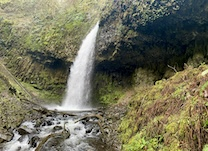
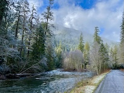
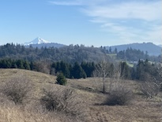
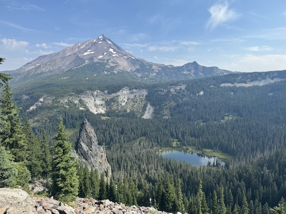
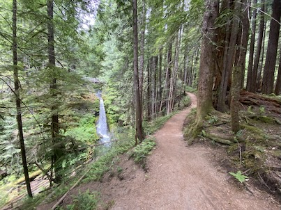

Hikes Latourell Falls  Latourell Falls Loop Hike Salmon River  Old Salmon River Hike Powell Butte  Powell Butte Summit Loop Hike
Backpacking Trips Mount Jefferson (2 Nights)  Pamelia Lake, Hunt's Creek and Hunt's Cove Trail Loop to Hank's Lake Lewis River (1 Night)  Lewis River Trail